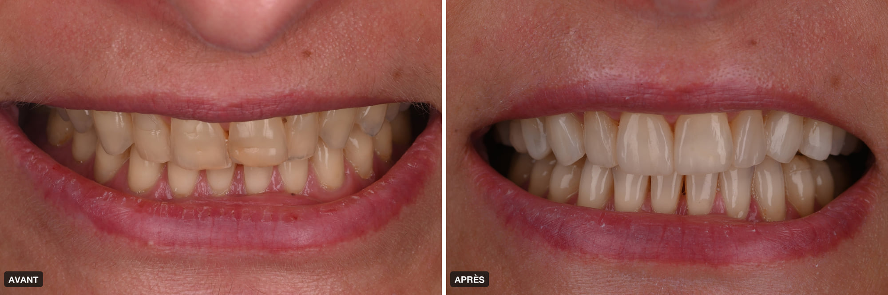

Accueil › Patient › Edge bonding
L’acte
Edge bonding
Le composite du bord des dents
L’edge bonding consiste à ajouter une petite quantité de composite sur le seul bord des dents de devant. On ne recouvre pas la dent : on en redessine le contour, pour corriger la ligne du sourire et la forme des dents. C’est le geste le plus léger de la dentisterie esthétique, sans tailler la dent. Sa contrepartie est connue : posé là où les dents travaillent, ce petit ajout est plus fragile qu’un composite étendu.

Praticien hospitalier, Pitié-Salpêtrière · CMME, Sainte-Anne
1 / 5
Qu’est-ce que l’edge bonding ?
C’est un composite bonding limité au bord libre des dents de devant : une petite quantité de résine, collée sur l’émail, sculptée puis polie, sans tailler la dent et sans recouvrir sa face visible. Je le pratique au cabinet, à Paris 9e.
Le bord, et seulement le bord
Le bord libre est l’extrémité de la dent, celle qui coupe. L’edge bonding y ajoute de la résine — un millimètre ou deux, souvent moins — pour en changer la longueur ou le dessin. Tout le reste de la dent reste tel qu’il est : son émail, sa teinte, sa brillance.
Ce que l’on modifie : la ligne du sourire
Vus de face, les bords des dents du haut dessinent une courbe qui suit normalement celle de la lèvre inférieure : c’est la ligne du sourire. Quand les incisives ont raccourci, cette ligne s’aplatit, parfois s’inverse. Très peu de matière, ajoutée aux bons endroits, suffit à la redessiner.
Et la forme des dents
Un angle à adoucir ou à marquer, un bord ébréché, deux incisives centrales de longueurs inégales, une incisive latérale un peu courte : ce sont les bords et les angles qui donnent aux dents leur caractère. L’edge bonding travaille précisément là.
En bref
- Uniquement sur le bord des dents
- Sans tailler la dent
- Le plus souvent en une séance
- Redessine la ligne du sourire et les formes
- Plus fragile qu’un composite étendu
- Se répare facilement
2 / 5
Quelle différence avec un composite bonding étendu ?
La surface traitée. Un composite étendu recouvre toute la face visible de la dent et peut en changer la teinte, le volume et la forme. L’edge bonding ne concerne que le bord : il modifie le contour de la dent, pas sa surface.
Le composite étendu : toute la face de la dent
Dans un composite bonding étendu, la résine couvre la face visible de la dent, souvent sur plusieurs dents de devant. On peut alors changer la teinte, fermer un espace, redonner du volume, reconstruire une dent très usée. C’est une transformation plus complète, qui demande plus de matière, plus de temps, et l’entretien de toute la surface.
L’edge bonding : le contour seulement
Ici, l’essentiel de ce que l’on voit reste la dent naturelle. La résine ne représente qu’une petite partie du sourire : c’est ce qui rend le résultat discret, et c’est aussi pourquoi l’edge bonding ne peut ni changer la couleur des dents, ni fermer un espace, ni corriger une position.
Pourquoi il est plus fragile
Le bord est l’endroit où les dents se rencontrent, coupent et reçoivent les chocs. Un petit ajout de résine y est collé sur une surface réduite et travaille presque seul, en bout de dent. Un composite étendu, lui, s’appuie sur toute la face de la dent : les contraintes s’y répartissent mieux. Les études sur les composites des dents de devant vont dans le même sens : la fracture est leur première cause d’échec, et les restaurations qui n’intéressent pas le bord de la dent sont celles qui durent le mieux.
Ce que cela change en pratique
On le choisit en connaissance de cause : un edge bonding se surveille et se retouche. La contrepartie de sa légèreté, c’est qu’un éclat reste possible ; son avantage, c’est qu’il se répare vite, sans rien refaire d’autre.
| Critère | Edge bonding | Composite bonding étendu |
|---|---|---|
| Surface traitée | Le bord de la dent | Toute la face visible |
| Ce que l’on change | La longueur, les angles, la ligne du sourire | La forme entière, le volume, la teinte, les espaces |
| Ce que l’on voit | Surtout la dent naturelle | Surtout le composite |
| Taille de la dent | Aucune | Aucune, ou très limitée |
| Solidité | Plus exposé aux éclats | Contraintes mieux réparties |
| Entretien | La retouche d’un bord, au besoin | Le polissage de toute la surface |

3 / 5
Dans quels cas propose-t-on un edge bonding ?
Quand la dent est saine, d’une teinte satisfaisante, et que seul son contour gêne : bords ébréchés ou irréguliers, dents un peu courtes, ligne du sourire aplatie, angles à redessiner. Dès qu’il faut changer la teinte, le volume ou fermer un espace, un autre traitement est plus adapté.
Les bonnes indications
Réparer un éclat. Égaliser des bords irréguliers. Rendre un peu de longueur à des incisives qui ont raccourci. Redonner sa courbe à la ligne du sourire. Harmoniser deux dents voisines. Finir un traitement d’orthodontie, quand les dents sont alignées mais que leurs bords ne le sont pas.
Quand un composite étendu ou des facettes conviennent mieux
Si la dent doit changer de teinte, de volume ou de proportions, si un espace doit être fermé, ou si l’usure a emporté une grande partie de la dent, ne traiter que le bord ne suffit pas. Un composite étendu ou des facettes répondent alors mieux à la demande.
Quand il vaut mieux s’abstenir
L’edge bonding supporte mal les contraintes fortes : des dents qui se rencontrent bord à bord, un bruxisme non protégé, l’habitude de ronger ses ongles ou de mordiller un stylo. Dans ces situations, le composite casserait vite : on traite d’abord la cause, ou l’on choisit une autre solution.
Si les bords sont usés : comprendre d’abord pourquoi
Quand les bords sont usés, je cherche d’abord pourquoi : rallonger des dents sans avoir compris la cause de leur usure expose à voir le composite s’ébrécher à son tour.
Bonnes indications
- Un bord ébréché
- Des bords irréguliers
- Des incisives un peu courtes
- Une ligne du sourire aplatie
- Des angles à redessiner
- Des finitions après orthodontie
Moins adapté
- Changer la teinte des dents
- Fermer un espace
- Des dents très usées
- Des dents qui se touchent bord à bord
- Un bruxisme non protégé
4 / 5
Comment se déroule la séance ?
En une séance le plus souvent, sans tailler la dent et généralement sans anesthésie : on choisit la forme ensemble, puis le composite est collé sur l’émail, sculpté et poli.
Décider de la forme avant de coller
Tout part de l’analyse du sourire : photographies, position des lèvres, longueur souhaitable des dents. La nouvelle forme peut être essayée directement en bouche, avec un peu de composite posé sans colle, pour la voir et la corriger avant de décider.
Éclaircir d’abord, si on le souhaite
Le composite ne s’éclaircit pas. Si un éclaircissement est envisagé, il se fait avant : la teinte de la résine est ensuite choisie sur la dent éclaircie, une fois sa couleur stabilisée.
Coller, sculpter, polir
La dent est isolée de la salive, l’émail est préparé pour le collage, puis le composite est monté en fines couches. Le bord naturel d’une dent est translucide : pour que l’ajout ne se voie pas, il faut reproduire cette translucidité, puis polir jusqu’à faire disparaître la jonction entre la dent et la résine.
En sortant
On repart avec le résultat, sans temps de cicatrisation. Un contrôle permet de vérifier les contacts entre les dents et de parfaire le polissage.
La séance
- Analyse du sourire et choix de la forme
- Éclaircissement avant, si on le souhaite
- Collage sur l’émail, sans taille
- Composite monté en couches, puis poli
- Contrôle des contacts
Avant / après
5 / 5
Combien de temps tient un edge bonding ?
Plusieurs années quand il est bien indiqué et entretenu, mais c’est le composite le plus exposé aux éclats : il faut s’attendre à des retouches. Rien n’ayant été taillé, toutes les options restent ouvertes par la suite.
Pas de durée garantie
La longévité d’un composite antérieur dépend de l’indication, de sa taille, de la façon dont les dents se rencontrent, des habitudes de chacun et de la qualité du collage. Pour un edge bonding, je préfère parler d’entretien que de durée : un petit ajout sur un bord peut rester intact des années, ou demander une retouche plus tôt.
Ce qui le fait durer
Des contacts entre les dents bien réglés, une gouttière de nuit quand on serre ou grince des dents, et quelques précautions : ne pas ronger ses ongles, ne pas couper de fil ni ouvrir d’emballage avec les dents, croquer les aliments très durs sur le côté.
S’il s’ébrèche
Il se répare, le plus souvent sans tout refaire : on ajoute de la matière sur place, puis on repolit. La réparabilité est l’un des grands intérêts de cette technique.
Et ensuite ?
L’edge bonding n’engage pas l’avenir : la dent n’a pas été taillée. Si le projet évolue, on peut le retoucher, le compléter, ou passer plus tard à un composite étendu ou à des facettes.
Pour le faire durer
- Des contacts bien réglés
- Une gouttière de nuit en cas de bruxisme
- Ne pas ronger ses ongles
- Ne pas croquer très dur avec les dents de devant
- Un polissage d’entretien au cabinet
Pour aller plus loin
Questions fréquentes
Quelle est la différence entre edge bonding et composite bonding ?
L’edge bonding est un composite bonding limité au bord des dents : il modifie leur longueur, leurs angles et la ligne du sourire. Un composite bonding étendu recouvre toute la face visible de la dent et peut en changer aussi la teinte et le volume.
L’edge bonding est-il fragile ?
Plus qu’un composite étendu, oui : un petit ajout collé sur le bord de la dent reçoit directement les contraintes. C’est pourquoi je ne le propose que lorsque les contacts entre les dents le permettent, avec une gouttière de nuit en cas de bruxisme.
Combien de temps dure un edge bonding ?
Plusieurs années quand il est bien indiqué, mais c’est le composite le plus exposé aux éclats, puisqu’il se trouve sur le bord des dents. Il se retouche facilement : il faut le voir comme un traitement qui s’entretient.
L’edge bonding abîme-t-il les dents ?
Non : le composite est collé sur l’émail sans tailler la dent, et il peut être retouché ou retiré. Parler de réversibilité absolue serait excessif ; c’est une approche très conservatrice et modifiable.
Est-ce douloureux ?
Non. Le composite est simplement ajouté sur la dent : il n’y a le plus souvent pas besoin d’anesthésie.
Peut-on éclaircir ses dents après un edge bonding ?
Mieux vaut le faire avant : le composite ne s’éclaircit pas. La teinte de la résine est choisie sur la dent déjà éclaircie.
Edge bonding ou facettes ?
L’edge bonding corrige le contour d’une dent saine, dont la teinte convient. Les facettes permettent une transformation plus globale de la forme et de la couleur. Le choix dépend de ce que vous voulez changer.
Combien coûte un edge bonding ?
Le prix est établi de manière personnalisée, selon le nombre de dents concernées, et vous est remis après le bilan esthétique.
Savoir si un edge bonding suffit
Une consultation esthétique permet de déterminer ce qui peut être obtenu en ne traitant que le bord des dents, et ce qui demanderait un composite plus étendu ou des facettes.
Prendre rendez-vousSources scientifiques
Les références ci-dessous soutiennent les principaux messages cliniques de cette page.
- Wolff D, Frese C, Frankenberger R, et al. Direct Composite Restorations on Permanent Teeth in the Anterior and Posterior Region — An Evidence-Based Clinical Practice Guideline — Part 1: Indications for Composite Restorations. J Adhes Dent. 2024;26:185–200. — DOI : 10.3290/j.jad.b5748881 — PubMed
- Demarco FF, Collares K, Coelho-de-Souza FH, et al. Anterior composite restorations: A systematic review on long-term survival and reasons for failure. Dent Mater. 2015;31(10):1214–1224. — DOI : 10.1016/j.dental.2015.07.005 — PubMed
- Shah YR, Shiraguppi VL, Deosarkar BA, Shelke UR. Long-term survival and reasons for failure in direct anterior composite restorations: A systematic review. J Conserv Dent. 2021;24(5):415–420. — DOI : 10.4103/jcd.jcd_527_21 — PubMed
- Burke FJT. Longevity of Indirect and Direct Restorations in Anterior Teeth. Prim Dent J. 2023;12(2):76–84. — DOI : 10.1177/20501684231175591 — PubMed
Repère clinique du Dr Franck Moyal : aucune étude ne compare directement l’edge bonding et le composite étendu ; la plus grande fragilité de l’edge bonding est une observation clinique, cohérente avec les données sur les restaurations du bord des dents.